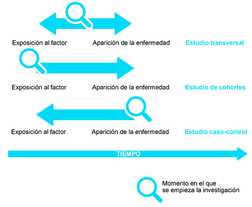

MÓDULO 1 : ESTUDIOS EPIDEMIOLÓGICOS
1.4 Tipos de estudios epidemiológicos
Los estudios epidemiológicos se pueden dividir en dos grandes grupos:
Estudios experimentales (o de intervención)
En los estudios experimentales el investigador asigna la exposición de los participantes a un determinado factor (por ejemplo asignando a unos pacientes recibir un determinado tratamiento y a otros no, como serían los ensayos clínicos). Los estudios experimentales son aleatorizados o no aleatorizados dependiendo de si la decisión de quien va a estar o no expuesto se hace o no al azar. Los estudios experimentales aleatorizados son los más robustos y sus resultados se consideran de una mayor evidencia científica, pero como contrapartida son los más caros y no siempre viables.
Figura 10. Niveles de evidencia científica de los estudios epidemiológicos. (Mejor sin cáncer)
Estudios observacionales
En los estudios observacionales el investigador no modifica la exposición de los participantes, sino que se limita a medir las variables definidas en el estudio. Los estudios observacionales pueden a su vez ser descriptivos o analíticos.
Estudios descriptivos
Estos estudios no tratan de descifrar una presunta relación causa – efecto sino más bien describir una enfermedad o característica en una población determinada. Son útiles cuando se conoce poco acerca de lo que queremos estudiar y normalmente sirven como inicio de posteriores estudios analíticos. Un ejemplo sería un estudio para determinar cuál fue el porcentaje de población con obesidad en una determinada región.
Estudios analíticos
Estos estudios tratan de analizar la asociación entre una enfermedad (efecto) y determinadas características (causas). En este tipo de estudios es necesario que haya un grupo de comparación (ejemplo fumadores versus no fumadores). Dependiendo de la dirección temporal, los estudios analíticos se clasifican en transversales, de cohortes o de casos-controles.
Estudios transversales
Examinan simultáneamente la relación entre una enfermedad (efecto) y una serie de factores, en una población determinada, en un momento concreto del tiempo. Por ejemplo realizar una encuesta para estudiar la frecuencia de cáncer de pulmón en hombres fumadores y no fumadores. Aunque al estudiarse simultáneamente la presencia de la enfermedad y el factor determinante de la misma, no se puede establecer una relación causa – efecto, estos estudios son útiles para tener una “fotografía rápida” del problema de salud en un momento dado del tiempo.
Figura 11. Diseño de los estudios transversales, de cohortes y de caso-control (Mejor sin cáncer ).
Estudios de cohortes y de casos y controles
En estos estudios existe un intervalo de tiempo entre la observación de la exposición a los factores de riesgo y la enfermedad, de forma que puede establecerse una secuencia temporal entre ellos y se puede establecer una relación causa – efecto. Si el estudio empieza observando la exposición al factor de riesgo (por ejemplo fumar) en una población y luego se sigue la población durante un periodo de tiempo para ver si se desarrolla la enfermedad (por ejemplo cáncer de pulmón) el estudio es de cohortes. Si el estudio empieza observando la enfermedad (por ejemplo, pacientes diagnosticados con cáncer de pulmón) y después busca hacia atrás en el tiempo cuáles de las personas diagnosticadas con la enfermedad habían estado expuestas al factor de riesgo (por ejemplo qué pacientes eran fumadores y desde cuándo) entonces el estudio es de casos-controles. El estudio de cohortes se considera más robusto que el de casos y controles por seguir una secuencia temporal (primero se estudia qué puede causar la enfermedad y luego si la enfermedad ha ocurrido). No obstante, cuando la enfermedad es poco frecuente o tarda mucho tiempo en manifestarse, el estudio de cohortes puede ser inviable y muy caro y en este caso el estudio casos-controles será más adecuado.
Habitualmente, la información descriptiva sobre un cáncer en concreto se suele obtener a partir de estadísticas rutinarias de ámbito poblacional. Destacan los registros de cáncer de base poblacional, los de base hospitalaria y los certificados de defunción. Estos registros suelen informar de la causa por grupos de edad, sexo y población. La Agencia de Investigación sobre el Cáncer (IARC) publica de forma periódica la incidencia del cáncer a partir de registros poblacionales, en los volúmenes de la serie Cancer Incidence in Five Continents .
Hay que destacar que el registro de cáncer es una parte esencial de todo programa de control del cáncer. Sus datos pueden utilizarse para la investigación etiológica, la prevención primaria (por ejemplo las tendencias en la incidencia de cáncer pueden estar relacionadas con cambios en el tiempo en la exposición a factores de riesgo) y secundaria (por ejemplo para analizar tendencias en la incidencia de un cáncer respecto a las frecuencias de cribado de una población), y la planificación sanitaria para fijar prioridades y marcar objetivos de las actividades de control del cáncer.
Probablemente, la mayor dificultad de los estudios analíticos recae en la interpretación correcta de los datos. La asociación numérica con significación estadística no redime que el estudio tenga errores que invaliden los resultados. Esto puede producirse por la presencia de errores en la selección, medición o en el análisis de los datos. Los errores pueden ser:
Errores aleatorios: se deben al azar y en general pueden disminuirse aumentando el tamaño de la muestra.
Errores sistemáticos (también llamados sesgos): se deben a errores en el diseño del estudio o en el análisis de los datos, y conducen a conclusiones incorrectas sobre la relación entre la exposición y el resultado de interés. A diferencia de los errores aleatorios, estos tipos de errores son más difíciles de controlar y no se corrigen aumentando el tamaño muestral. Dentro de los sesgos conviene explicar los factores de confusión. Se produce confusión cuando la asociación entre la exposición y el resultado de interés puede ser explicada por una tercera variable (factor de confusión) o, por el contrario, cuando una asociación real queda enmascarada por esta tercera variable. Para que una variable pueda actuar como factor de confusión debe asociarse tanto con la enfermedad como con la exposición de estudio pero no debe estar incluida en la cadena de producción entre exposición y efecto. Por ejemplo, podemos observar que los consumidores de alcohol tienen un riesgo alto de desarrollar cáncer de pulmón. Sin embargo, los bebedores de alcohol son generalmente más fumadores que los no bebedores y todos sabemos que el tabaco está asociado al cáncer de pulmón. La asociación alcohol-cáncer de pulmón puede estar confundida por el consumo de tabaco y por lo tanto deberá ser considerada en la fase de análisis.

¿Podrías citar algún otro ejemplo de confusión?

Diferencias entre los estudios de cohortes y de casos y controles:
En los estudios de cohortes:
La evaluación es prospectiva, es decir, los sujetos se evalúan en función de la exposición al factor de riesgo y se siguen en el tiempo para ver si desarrollan o no la enfermedad de interés. En consecuencia permiten tener una visión clara de la temporalidad causa-efecto.
Suelen ser estudios largos y costosos ya que debemos dar tiempo a que se desarrolle la enfermedad de interés.
La medida de estudio es el Riesgo Relativo (RR) que estima la tasa de enfermedad de los sujetos expuestos versus la tasa de enfermedad en NO expuestos.
En los estudios de casos y controles:
La evaluación es retrospectiva, es decir, el estudio parte de agrupar a los sujetos en función de la presencia (casos) o ausencia de enfermedad (controles) y posteriormente se evalúa si el sujeto había estado expuesto previamente al factor de interés. Estos estudios pueden ser indicativos de una relación causal, pero no la confirman.
Son estudios más baratos que los de cohortes y se pueden realizar en un periodo de tiempo bastante corto.
La medida de estudio es la Odds ratio (OR) que estima el riesgo de enfermedad relativo a la exposición.
¿Qué condiciones favorecen la realización de estudios de cohortes?
¿Qué medidas de exposición podrías incluir en un estudio de obesidad y cáncer de mama?
Los estudios de mayor calidad para evaluar intervenciones médicas son los estudios randomizados. En ellos se adjudica la intervención al azar y se compara el resultado entre los grupos de intervención y el grupo placebo.
Un estudio randomizado en fase II permite demostrar la eficacia de un tratamiento, mientras que un estudio en fase III estima cuál de las intervenciones es superior. Los ensayos de prevención (p. ej., vacunas) requieren estudios en fase III para demostrar eficacia. Los ensayos clínicos demuestran la eficacia de un tratamiento. Los resultados de una intervención en la población general es lo que se denomina efectividad y su evaluación requiere estudios en fase IV.
En la actualidad, muchos estudios en oncología clínica utilizan la metodología epidemiológica. Cuando los estudios randomizados o aleatorios son difíciles de realizar, los estudios observacionales pueden aportar información acerca de la eficacia de una tratamiento o cambios en la incidencia debido a un tratamiento. Es, pues, importante que el oncólogo sea capaz de manejar los conceptos básicos inherentes a estos estudios.